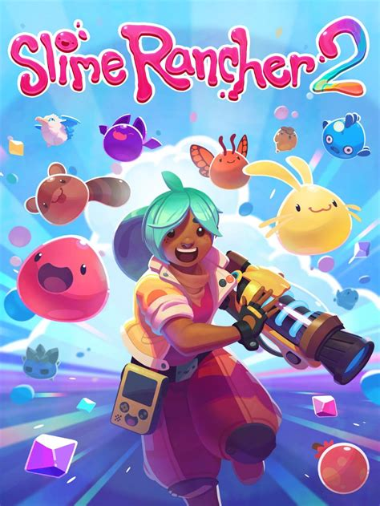
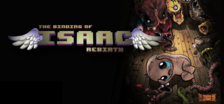
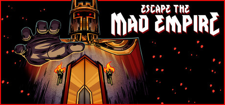
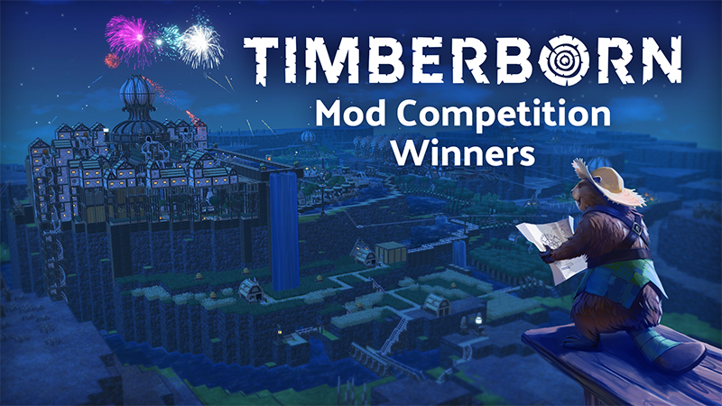
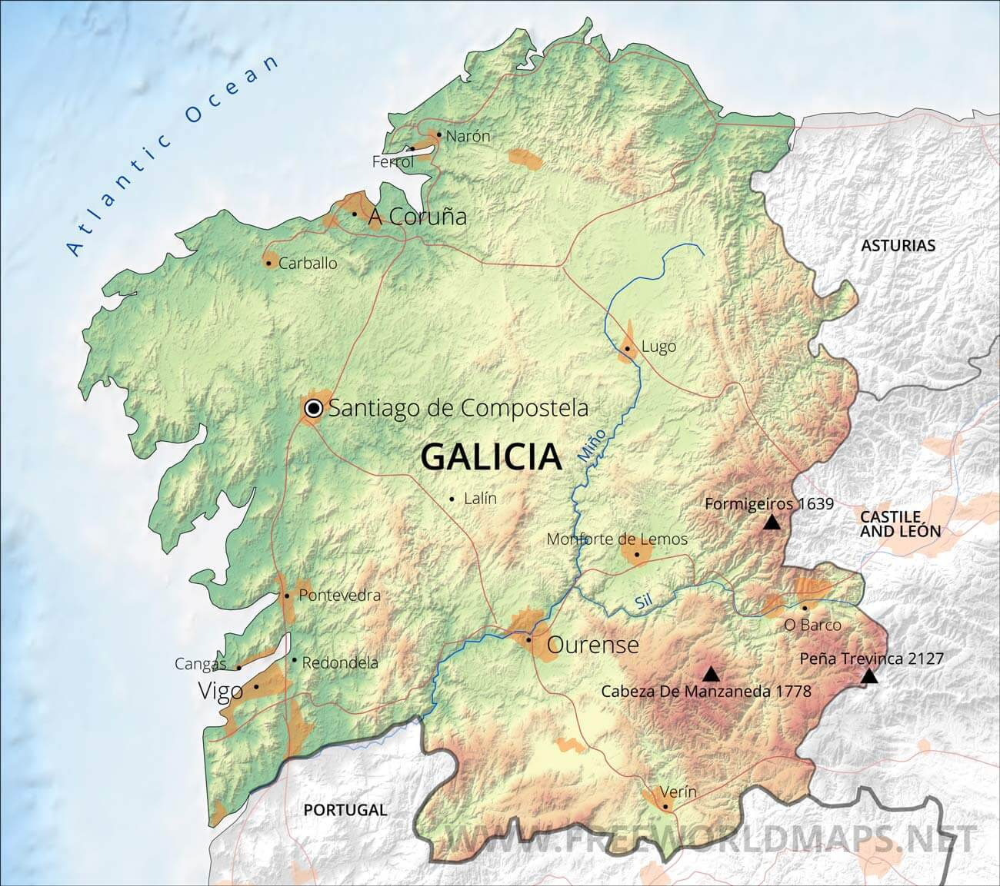

Todos los iconos deben tener el mismo tamaño y estilo, y una alternativa de texto para las personas que no puedan verlos (apartado 8.2 del tema).
La rejilla roja marca los "puntos de fuerza" de cada imagen (ver apartado 9 del tema). Sustituye las dos imágenes de ejemplo por otras tuyas y comprueba si el sujeto principal cae cerca de alguno de esos puntos.


Para cada imagen, indica qué ángulo crees que se ha usado (normal, contrapicado, picado, nadir o cenital) y en qué tipo de página web lo usarías.

[¿En qué tipo de web usarías este ángulo, y por qué?]
Usaria este angulo para páginas web de naturaleza oscura.

[¿En qué tipo de web usarías este ángulo, y por qué?]
Usaria este angulo para páginas web de naturaleza de viajes.

[¿En qué tipo de web usarías este ángulo, y por qué?]
Usaria este angulo para páginas web de naturaleza o guías turísticas.
[TODO 4: en 3-4 líneas, explica por qué es mejor usar una fuente de iconos en vez de imágenes sueltas para los iconos de una web. Relaciona tu respuesta con el apartado 8 del tema.]
Es mejor usar una fuente de iconos porque sus elementos vectoriales se pueden escalar sin perder calidad y cambiar de tamaño o color con CSS. Para que sean fáciles de entender y accesibles, conviene elegir iconos conocidos y añadirles una alternativa de texto que describa su función.